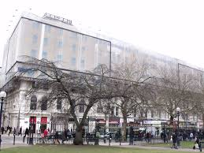
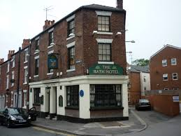
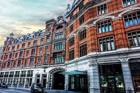
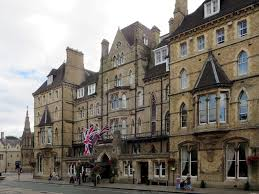

Ihr Reiseführer zu den besten Hotels in England
 Grand London HotelSterne:★★★★★ Im Herzen Londons, nahe Big Ben und London Eye. Preis: £200/Nacht |
Manchester City InnSterne:★★★☆☆ Zentral gelegen, ideal für Shopping und Kultur. Preis: £120/Nacht |
 Historic Bath HotelSterne:★★★★☆ Charmantes Hotel in Bath, nahe den Römischen Bädern. Preis: £150/Nacht |
 Liverpool Riverside HotelSterne:★★★☆☆ Direkt an den Docks, ideal für Beatles-Fans. Preis: £110/Nacht |
 Oxford Academic HotelSterne:★★★★☆ Nahe der Universität von Oxford, perfekt für Kulturreisende. Preis: £130/Nacht y |
| Eigenschaft | Hotels in England | Hotels in Europa |
| Durchschnittlicher Preis | £150/Nacht | €120/Nacht |
| Durchschnittliche Sternebewertung | 4 Sterne | 4 Sterne |
| Bekannte Ketten | Premier Inn, Travelodge | Accor, NH Hotels |
| Kultur & Geschichte | Sehr hoch (z.B. London, Bath) | Hoch (z.B. Paris, Rom) |
| Sprache | Englisch | Mehrsprachig (Französisch, Spanisch etc.) |